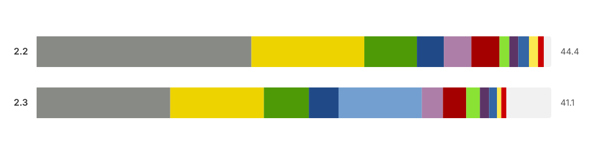
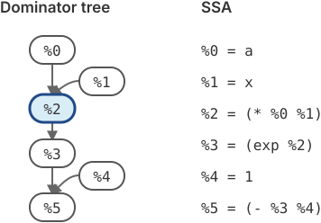

The Herbie developers are excited to announce Herbie 2.3! This release simplifies Herbie's core, improves performance on large expressions, and introduces new backends, including Rival 3.
What is Herbie? Herbie compiles mathematical expressions to fast and accurate floating point programs, avoiding the bugs, errors, and surprises of floating point arithmetic. Visit the main page to learn more.

reconstruct phase, light blue, handles Herbie
2.3's much larger search space. That larger search space results
in programs roughly 9% better—faster or higher
accuracy—than Herbie 2.2.
Herbie's "alt picking" system was entirely removed. Instead of selecting individual candidate programs to search more deeply, Herbie now searches all candidate programs in parallel. This increases runtime but also produces better-quality results and removes a hard-to-tune hyperparameter from Herbie, making the compilation pipeline easier to understand.
The core "patching" loop was also broken out into a separate "reconstruction" phase to handle huge numbers of candidate programs more efficiently. Reconstruction builds reachability maps and uses observable equivalence to quickly discard identical candidate programs. As a result, Herbie 2.3 searches through significantly more candidate programs than Herbie 2.2, without a corresponding increase in runtime.
Taylor expansion has also been substantially reworked. Herbie can now recognize and construct series expansions involving odd powers, fractional powers, and absolute values. It is better at both caching duplicate work and skipping unnecessary work. We also significantly reduced series expansion tuning parameters after confirming that this would not change results. Series expansion is thus significantly faster.

exp(a*x) - 1.
Next to it, the Lengauer-Tarjan dominator tree used by regime
inference in Herbie 2.3, which identifies %2, or
a*x, as a branch expression containing all uses of
the a and x variables.
Herbie 2.2 introduced a SSA-like "batch" data structure to share subexpressions across multiple candidate programs. Herbie 2.3 makes it the common representation for all of Herbie's internal subsystems, including evaluation, rewriting, pruning, compilation, and report generation. Operations on batches are cached, so Herbie now reuses computations across candidate programs instead of duplicating them.
Other subsystems leveraged this change to introduce new and faster algorithms, including Lengauer-Tarjan for branch expressions and a more complex dynamic program for regime inference that replaces multiple calls with a single exact solver. These algorithms are not only faster but have superior asymptotics.
As part of this emphasis on scalability, we've added over a hundred new benchmarks drawn from larger programs, and are looking to add more as Herbie continues to improve. We're excited about applying Herbie to full scientific formulas and kernels.
%0 = x %1 = (sincos %0) ; => [sin(x), cos(x)] %2 = (ref %1 0) ; => sin(x) %3 = (ref %1 1) ; => cos(x) %4 = (+ %2 %3)
sincos
operation, which computes both sine and cosine in a single call.
%1 stores an array and later ref
operations extract its entries. The final result is equal
to sin(x) + cos(x), but computed faster.
Herbie 2.3 includes initial support for array-valued expressions.
This is the foundation for reasoning about compound operations
(like sincos) and new hardware (like vector and matrix
accelerators). That said, arrays are still experimental, with usage
the default platforms limited to just the sincos
operation. We plan to expand that usage in later releases.
We ported Rival, Herbie's real arithmetic engine, to Rust. Rival was already, to our knowledge, by far the fastest real arithmetic library, and the Rust version is significantly faster. Besides lifting one of Herbie's most challenging performance bottlenecks, we hope this Rust version is also useful to other projects.
Herbie's egglog rewriting backend received significant attention. Egglog is a successor to egg, Herbie's default rewriting backend, and incorporates advanced features like typed expressions and multiple analyses. The egglog backend now produces better results than the default egg backend, but is still significantly slower. We are working with the egglog developers to improve egglog's performance and hope to switch to it as the default once that work is complete.
Finally, a note on the impact of coding agents on Herbie. The vast majority of new code in this release was written by coding agents, mostly Codex. Some uses were especially transformative. We used coding agents to track down unnecessary allocations and optimize hot procedures. This work is time-consuming but rote, and the resulting patches are easy to review. The port of Rival to Rust, or on a smaller scale the porting of Herbie's Pareto combination code to JavaScript, was also done partly by coding agents, though it also required substantial human oversight.
Many capable students graduated last summer, so the Herbie 2.3 team was on the smaller side. Yet this is one of the bigger releases, all thanks to coding agents! We don't think this rate of development will continue; we have picked much of the low-hanging fruit. But we are excited to see agents improve and, in turn, improve Herbie.
We want Herbie to be more useful to scientists, engineers, and programmers around the world. Please report bugs or contribute.
If you find Herbie useful, let us know!